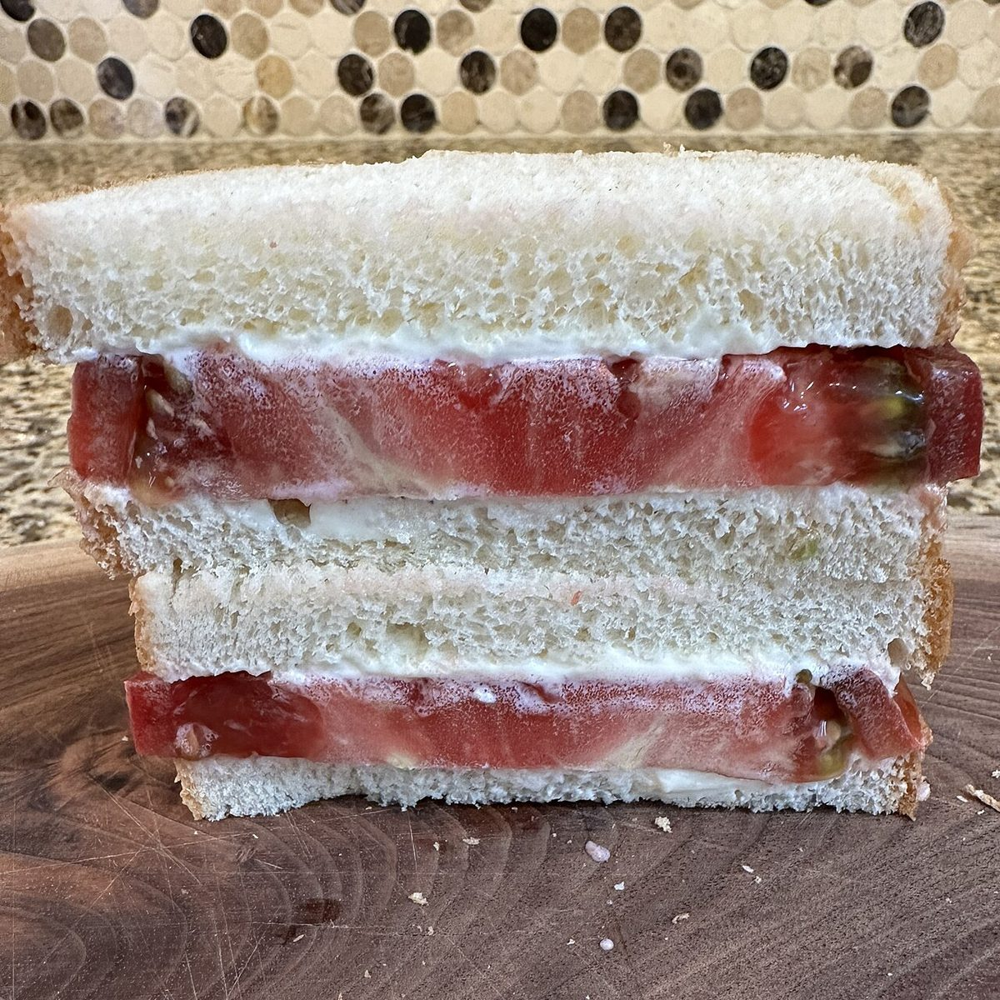
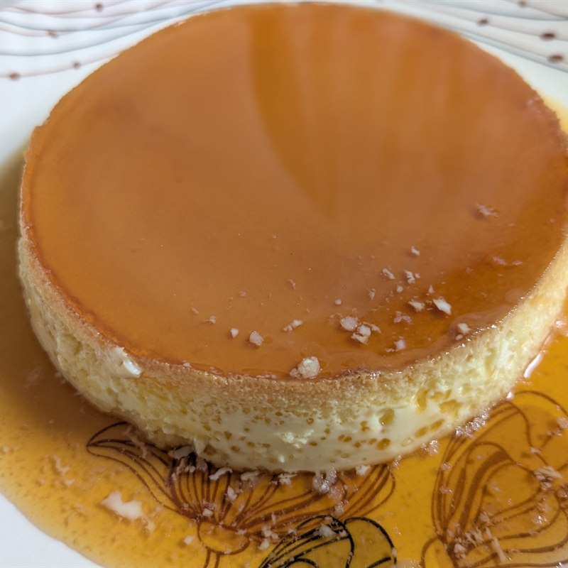

CAFE / 長崎県諫早市多良見町
カフェ ここんの
路地裏で、スパイスの香りとコーヒーでひと息つく昼どき。
お店のこと
「カフェ ここんの」は、JR長崎本線の喜々津駅から歩いて約10分、諫早市多良見町囲にあるカフェです。路地裏にひっそりと構える、レトロで落ち着いた雰囲気のお店として紹介されています。
- 席数は16席(カウンター7席、テーブル席9席)
- グリーンカレーやケーキ類、水曜・木曜限定のお昼のランチが人気
- コーヒーは注文後に豆を挽いて淹れる、と紹介されています
- 駐車場あり
店名の由来やオーナーさんの想いは確認できていないため、このページでは触れていません。「路地裏でひと息」というコンセプトは、紹介記事の雰囲気から作った制作側のイメージです。


掲載の写真はすべてフリー素材のイメージで、店舗の実際の様子・商品ではありません。
メニュー
紹介サイトやInstagramで確認できた料理の例です。内容・価格・提供日は変わることがあるため、最新情報はInstagramでご確認ください。
グリーンカレー・カレー
グリーンカレーが人気とのこと。スパイシーチキンカレーなども紹介されています。(写真はカレーのイメージ)

ピタサンドセット
生ハムとアボカドのピタサンドセットが紹介されています。(写真はサンドイッチのイメージ)



ほうじ茶プリン
ほうじ茶プリンが紹介されています。(写真はプリンのイメージ)

ケーキ類
ケーキ類が人気とのこと。種類は日により異なる場合があります。(写真はケーキのイメージ)
| 価格 | 準備中 |
|---|---|
| 営業時間 | 準備中(掲載元により表記が異なるため、お出かけ前にご確認ください) |
| 定休日 | 準備中 |
口コミ(イメージ例)
以下は制作側が作成したイメージ例です。実在のお客様の声ではありません。
路地を入った先にある、落ち着いたお店。カレーの香りに誘われて、ゆっくりお昼をいただきました。
カウンターで一人でも入りやすい雰囲気。食後にケーキとコーヒーをいただく時間がうれしいです。
友人とおしゃべりしながらのランチにぴったり。最新のメニューはInstagramで確認してから行くようにしています。
アクセス
| 店名 | カフェ ここんの |
|---|---|
| 住所 | 〒859-0402 長崎県諫早市多良見町囲465-4 |
| 最寄り駅 | JR長崎本線 喜々津駅から徒歩約10分(掲載サイトによる) |
| 電話 | 準備中 |
| 営業時間・定休日 | 準備中 |
写真クレジット
写真はフリー素材のイメージで、撮影地不明のものです。お店の写真・商品ではありません。縮小などの加工をしています。
- Deep-fried Tofu Japanese Curry Rice / Andy Li / CC0 1.0(撮影地: 不明)
- Beef curry rice 003 / Ocdp / CC0 1.0(撮影地: 不明)
- Tomato sandwich sliced / Valereee / CC0 1.0(撮影地: 不明)
- Basque cheesecake / Andy Li / CC0 1.0(撮影地: 不明)
- Pistachio cheesecake - Blossom Cafe Bar 2024-07-15 / Andy Li / CC0 1.0(撮影地: 不明)
- Pudding (WordPress Photo Directory) / Zain Abdullah / CC0 1.0(撮影地: 不明)
- Apple pie 24 / Shisma / CC BY 4.0(撮影地: 不明)
- Close-up of espresso machine with two brown coffee cups / Chevanon Photography / CC0 1.0(撮影地: 不明)
- Coffee Beans / megforce1 / CC0 1.0(撮影地: 不明)
- Beans (42182293175) / Skitterphoto / CC0 1.0(撮影地: 不明)
- A lot of coffee beans / www.Pixel.la Free Stock Photos / CC0 1.0(撮影地: 不明)
- Coffee Beans / fireskystudios.com / CC0 1.0(撮影地: 不明)
ライセンスの詳細は creativecommons.org をご覧ください。